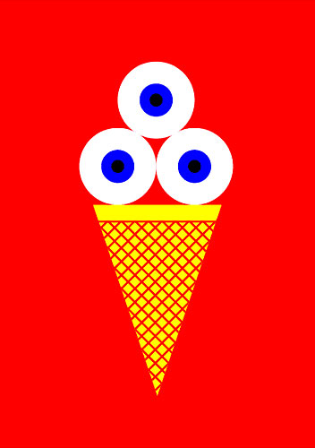
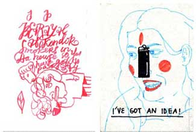
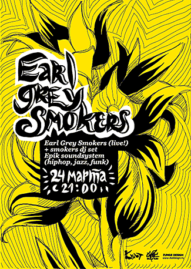
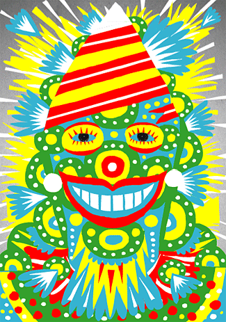

НОВЫЙ СЕЗОН
Дом дает Добро
Друзья, как и обещано, у меня новость. Две.
После майской выставки «Цеха» в клубе ДОМ я получил предложение заняться выставками на постоянной основе. Это было то самое предложение, от которого невозможно отказаться, хотя бы потому, что я уже и не помню, когда слушал живую музыку где-либо еще.
Речь идет о выставках именно по части современной иллюстрации и дизайна. До меня это делали Игорь Гурович и Петр Банков, так что можете представить, с какой гордостью и с каким трепетом я принимаю эту эстафету. В общем, я буду стараться, чтобы было интересно. Сезон открывается в ближайший четверг 13-го сентября. Я, признаться, недолго думал, с кого начать — первым выступит Протей Темен. Со своей первой же персоналкой, «Иконография Добротаризма».

Нет смысла представлять здесь Протея, но все же пару слов я для порядка скажу.

Пришлось порыться в Протеевской биографии, и обнаружилась удивительная вещь. Протей всего три года как вышел на свет. У меня это не укладывается в голове, настолько прочно он врос в местный ландшафт. Собственно, имя «Протей» уже стало нарицательным для «вырви глаз»-цветов и вообще дизайнерского беспредела. При этом стопроцентная узнаваемость никак не отменяет стопроцентной уникальности каждой его работы, стопроцентная расслабленность — стопроцентной точности, и наследство лучших — зубодробительной свежести.

И то ли еще будет. Поэтому сегодня, на мой взгляд, самое время приглядеться внимательно к протеевским работам. Если ничего не предпринять прямо сейчас, очень может статься, что уже через пару лет мрачный дизайн будет вне закона.

Года полтора назад мы сидели где-то на траве, и кто-то спросил Протея, отчего тот всегда в черном. Это траур,- ответил Протей, — по современному искусству. Окей, сказал я, а что в таком случае означает твой розовый пояс? (на самом деле, конечно, пояс был чистой магенты) . А это луч надежды, ответил Протей, — это я.